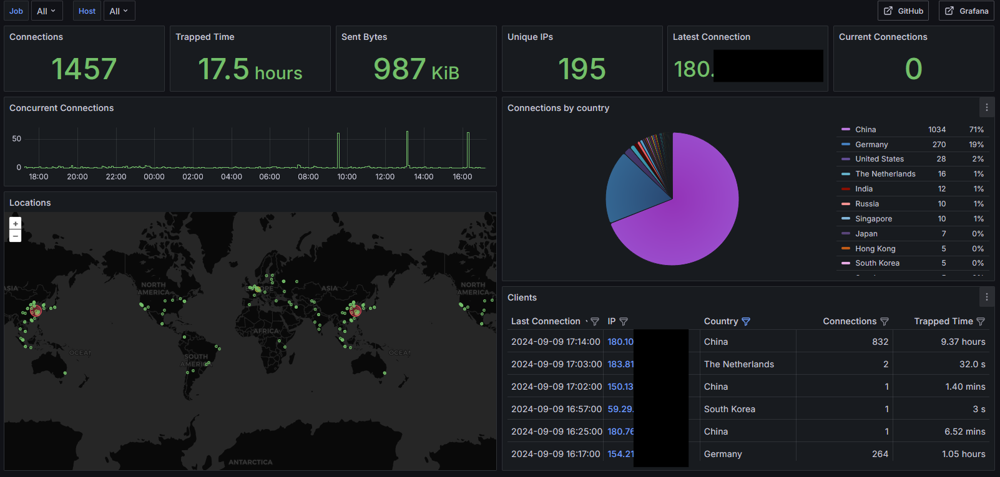

Endlessh
A few days ago, I set up Endlessh-go (aka SSH-Tarpit). It's quite amusing to see how SSH scanners fall for it. Brief explanation: Endlessh listens on an open port, and when someone tries to log in via SSH, nothing happens. However, the client is not disconnected, which causes them to be 'trapped' and slowed down indefinitely. You can also integrate Endlessh nicely into Grafana. It looks something like this: Just for fun, I looked up a German IP in the Whois that stood out particularly and sent an email to the registered abuse contact. The IP belonged to a hosting provider. Let’s see what comes out of it. I also searched for the IP on CrowdSec and quickly found it had already been flagged before.
